Free to forkNo licence and no copyright claim: build this game under your own name, or lift one idea from it. Why?
Game overview
Chain Reaction Demolition Punch is a short, satisfying falling-sand game about one punch and everything that follows it. A cyclops superhero picks a spot on a building and hits it; the stone there breaks loose as white-hot shrapnel, and the heat it carries melts the building into ash, pixel by pixel, in a chain reaction that can run far past the point of impact.
Every building is generated, every stage is a new skyline, and the whole game is in the side view of a pixel simulation like Powder Toy. Your job is choosing where, at what angle and how hard. The physics does the rest, and you get to watch.
It's one of a series of small falling-sand games, each built around one simulation idea and given just enough structure to feel like a complete game, at the scale of a good browser game.
Target audience
People who love watching things fall apart properly: falling-sand sandboxes, demolition videos, domino runs and physics toys.
They want a few minutes of big, clean destruction with a little cleverness in it, not a long game to learn.
It's mouse only: point, set the angle, time a power meter.
Game's purpose
Power and relief: a whole building brought down by your punch, and the tension let out with it.
Play and wonder: a cascade you set off but can't fully predict, worth watching to the last spark.
Understanding: learning how heat moves through stone, and where to hit to get the most from one blow.
It deliberately avoids draining rest: there's no timer, no punch limit and no way to fail.
Core concept
Falling-sand games are wonderful toys with nothing to do once the novelty wears off, and most demolition games script their collapses.
Here a simple, real simulation of heat and momentum does all the demolishing, and the game gives it a goal: reduce every building to ash.
Because buildings are generated and no two punches play out alike, the same simple act stays surprising.
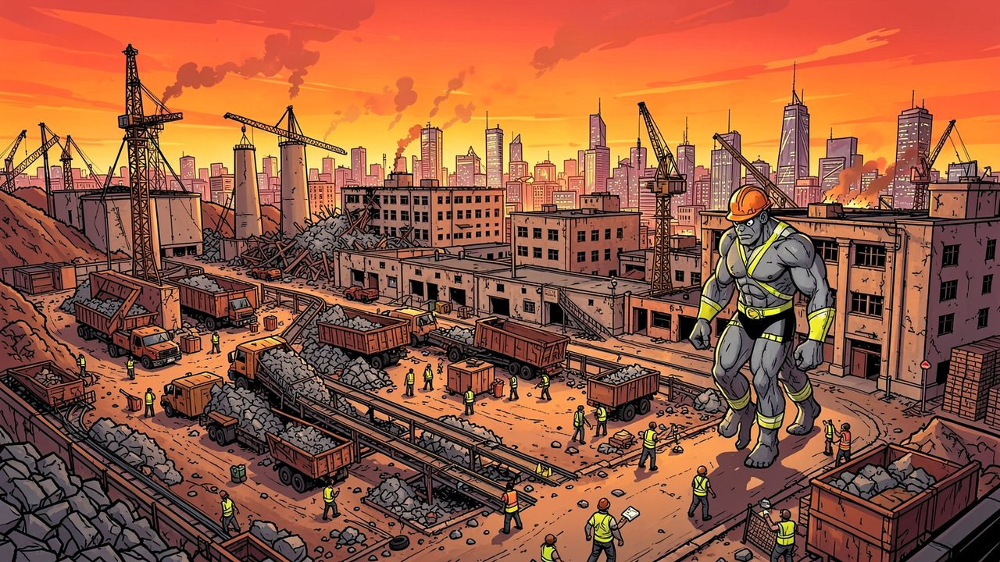
"Old buildings come down as fine ash and rubble, and the cleanup crew carries it all off to be made into new ones."
Lore and story
A one-giant demolition company
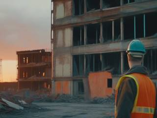
Somewhere a city is renewing itself, and its old buildings have to go. The demolition company that takes them down is one employee: a cyclops superhero in a hard hat and a high-visibility vest, with a punch hot enough to melt stone.
He doesn't knock buildings over. He turns them into powder, which is exactly what the cleanup crew wants, because powder is easy to scoop up and haul to the recycling yard, where it becomes the next building.
The job right now
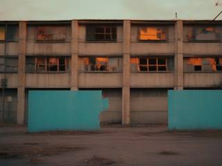
There's always another site on the list. Turn up, look the buildings over, pick your spot, and punch until there's nothing left standing but the ground.
Controls and interface
The scene is a side view of a stage: brown ground, the buildings on it, sky above. A punch is three quick choices, all with the mouse:
Punch
Point
Choose the spot on the building to hit
Angle
Set the direction the punch comes in from
Click
Start the power meter, then click again to stop it at the power you want
The power meter swings back and forth, like the launch meter in Nanaca Crash. Low power is a small, precise hit about 10 pixels across; full power tears loose a circle up to 100 pixels across, with far more heat and speed in it. Then you watch, and when the cascade has settled, you punch again.
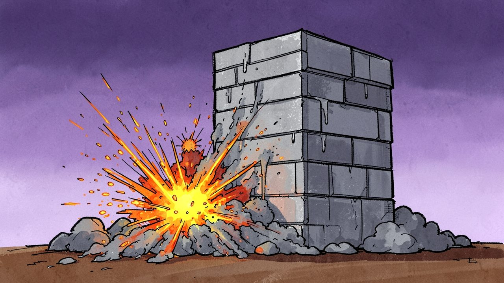
"A harder punch tears loose a bigger circle of stone, up to a hundred pixels across, and every pixel of it flies out hot."
Game layers
01 · Moment-to-moment
One punch, then watch
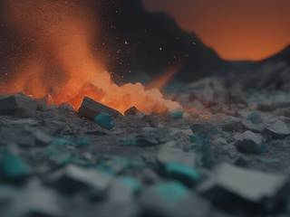
Pick the spot, set the angle, time the meter. The stone under your fist bursts into glowing shrapnel that tears through the building, melting channels of ash as it goes. Heat spreads from pixel to pixel, and pockets of trapped heat go off one after another in a drumroll of small blasts.
Then it settles, and you read what's left: which parts still stand, and where the next punch will do the most.
02 · Low metagame
A stage, then a run of nine
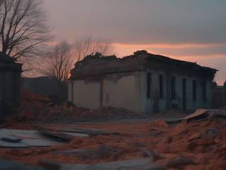
A stage is one site with one to five generated buildings. It's done when they've all been reduced to ash and rubble, however many punches that takes.
A run is nine stages, each with its own colors: the stone and ash are tinted anew for every stage, so each site looks different from the last.
03 · High metagame
The list never runs out
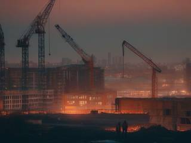
The city always has more old buildings to clear. When a run is done, the next one is generated with new buildings and new colors, so there's always another job on the list.
That's all the structure a game this size needs. It's a small, complete game, not a long campaign, and it's honest about it.
04 · Practical game flow
A break-sized game
Open it, and the first site is waiting. A stage takes a handful of punches and a few minutes of watching. Nothing is timed, nothing can be lost, and stopping after any stage is as good a place as any.
Game modes
There's one mode, the demolition run, and it nests like this:
The job listRun after run, as long as you like.
A runNine stages, each with its own colors.
A stageOne to five generated buildings, punched until they're ash.
Features and mechanics
The heart of it
The heat cascade
Every bit of destruction in the game comes from one rule about heat. A shrapnel pixel flying through stone carries heat that depends on how fast it's going. When it touches a stone pixel, it hands over its heat and loses some speed, then keeps going until it stops.
HitHot shrapnel gives a stone pixel its heat, say 5,000 points
MeltStone melts at 100: it keeps 100 and turns to ash
SpreadThe other 4,900 pass to the stone pixels around it, which melt in turn
BurstHeat with no stone left to go into becomes a new, smaller blast
So a single fast fragment can eat a long channel through a wall, and the heat keeps spreading from its path until it's all been used up. That's the chain reaction in the title, and it's why where you hit matters more than how often.
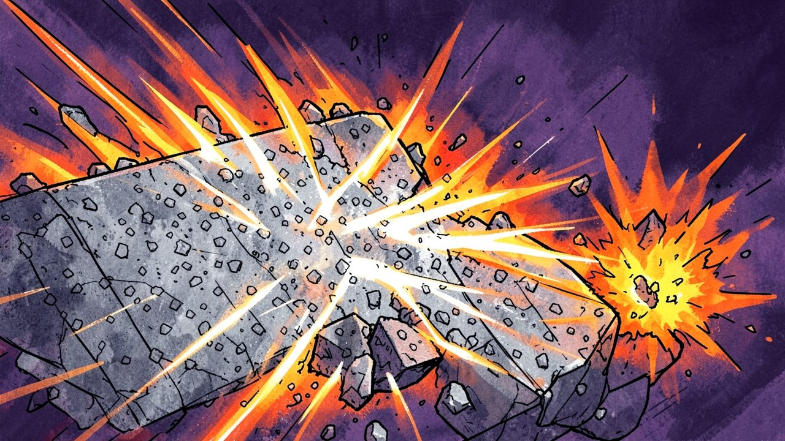
"Stone melts at 100 heat. Whatever a pixel doesn't need passes on to the stone around it."
The one input
Where, which way, how hard
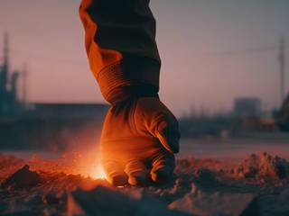
The punch sets every pixel in its circle loose. Each one flies outward from the point of impact, and the ones closest to the center get the most speed and the most heat. The power meter decides the size of the circle, from 10 to 100 pixels across, and how much energy goes into it.
That makes the choice interesting. A small, careful punch at the foot of a tower can send hot shrapnel up through its whole height. A full-power punch in the wrong place spends most of its energy flying out into the sky.
Aftershocks
A queue of delayed blasts
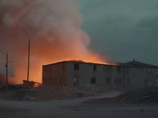
When heat reaches a stone pixel with no stone left beside it, the leftover heat has nowhere to go, so it bursts as a new blast, exactly like the punch but with that leftover as its power. It throws out its own shrapnel, which spreads its own heat.
These secondary blasts don't all go off at once. They join a queue and detonate in order, a tenth of a second apart, so a big cascade rolls through the building like a string of firecrackers instead of vanishing in one flash.
Nothing from nowhere
One energy budget
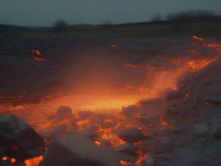
All the heat and momentum in a cascade come from your punch and nothing else. Every melted pixel uses some up, and the air slowly brakes every flying fragment. The secondary blasts only pass on what was left over; they never add new energy.
That keeps the cascade believable and readable. It always ends, it never runs away into a screen-wide meltdown, and with practice you can feel how far one punch will go.
A short list on purpose
Four materials
The simulation keeps to exactly the materials this game needs, which keeps it fast and every reaction easy to follow:
Material
How it behaves
Stone
What buildings are made of. Takes heat, melts into ash at 100, and passes on what it doesn't need.
Shrapnel
Stone torn loose by a blast. Flies hot and fast, perforating the stone it passes through and heating it.
Ash
What melted stone becomes. Falls and piles up, lands on stone and on other ash, and lets shrapnel fly straight through.
Terrain
The brown ground. Much tougher than stone, never heats or bursts, and slows shrapnel hard, so the ground takes only scratches.
A new skyline every stage
Generated buildings
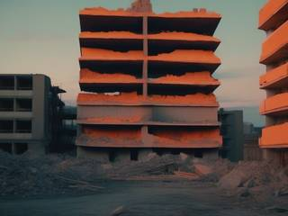
Buildings are built by a small generator in two passes. First it lays down the mass: one or more rectangles, making anything from a squat block to a tall tower or a sprawling wide hall, always connected to the ground. Then a set of if/else rules adds detail with smaller rectangles and straight lines: ledges, floors, pillars, overhangs, rooftop clutter, in simple patterns.
Every shape changes how heat travels. A thin pillar carries a cascade upward; a hollow floor stops it dead; a lonely overhang turns leftover heat into a delayed blast. So each new building is a new little puzzle about where to hit.
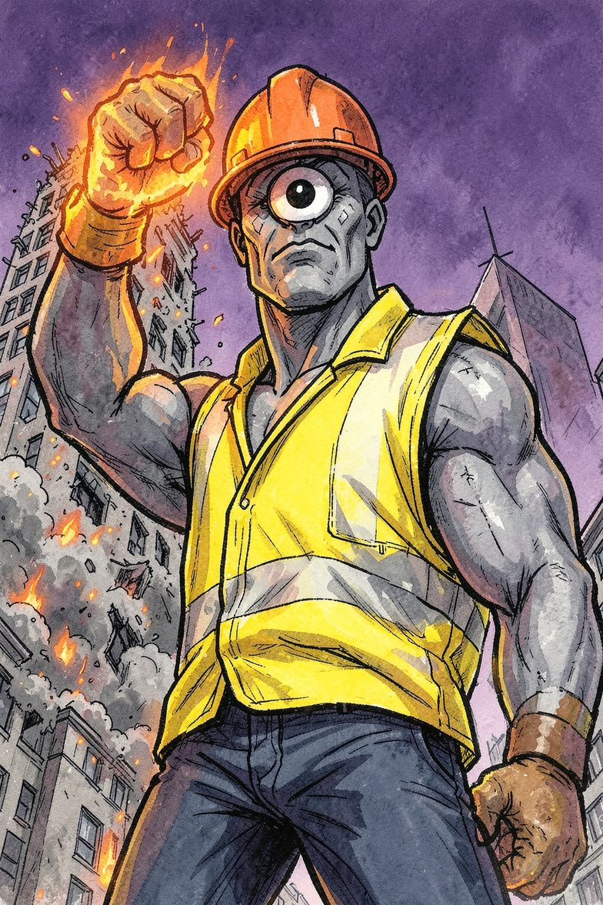
Work order
Chain Reaction Demolition Punch
Site cleared for demolition. Old buildings, one to five of them. Requested finish: fine ash, ready for the recycling crew.
Equipment provided: one cyclops, one fist. Pick your spot, set your angle, mind the meter. The heat will take it from there.